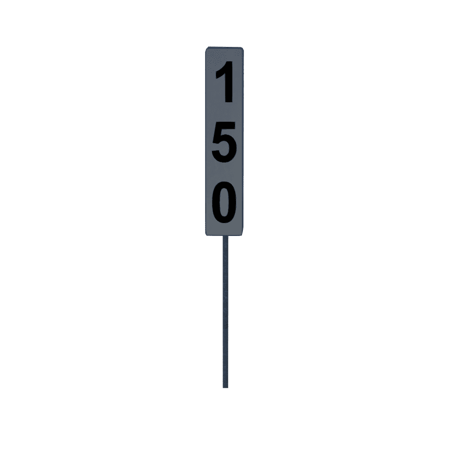
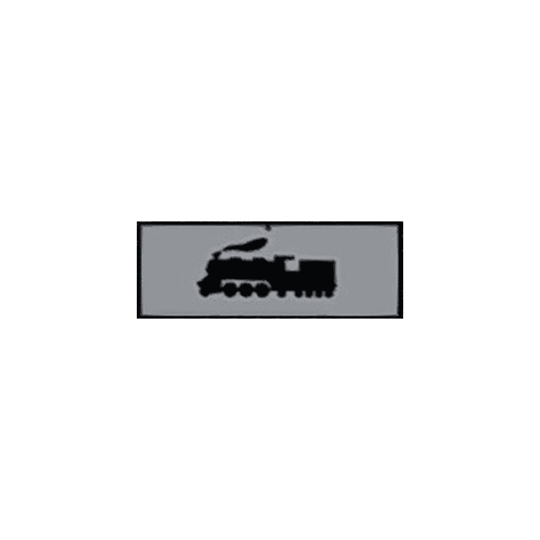
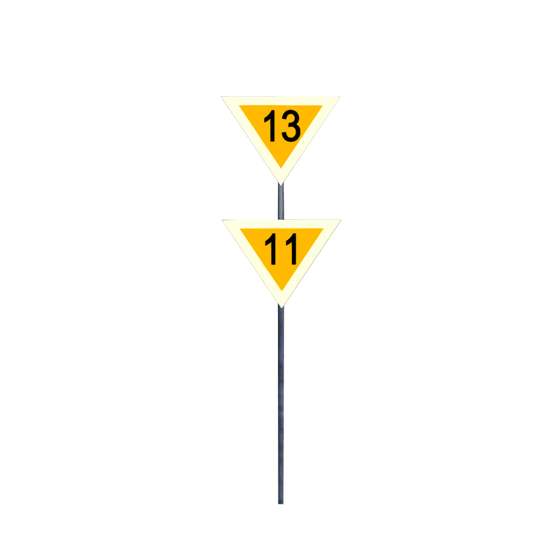
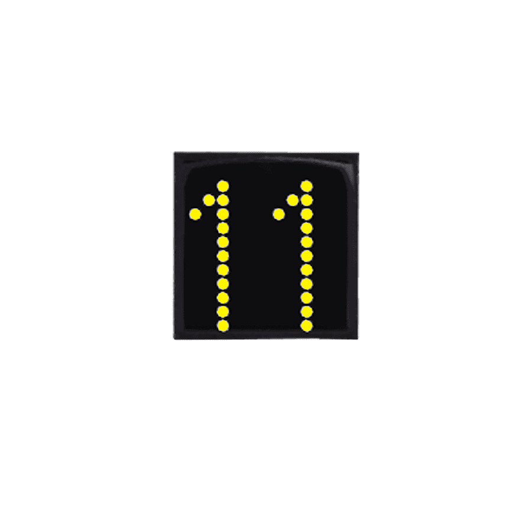

Rychlostníky
Zde je přehled rychlostníků a pomalých jízd.
Doplňující informace
Rychlostníky NS

Rychlostník NS
Předvěstník rychlostníku NS
Předvěstník konce rychlostníku NS
Konec rychlostníku NS

Tabulka s lokomotivou
Rychlostníky N

Rychlostník N
Dva rychlostníky N nad sebou
Dva rychlostníky N se svislými černými pruhy
Předvěstník rychlostníku N

Předvěstník dvou rychlostníků N
Tabulka s lokomotivou
Rychlostníky 3
Rychlostník 3
Předvěstník rychlostníku 3
Tabulka s lokomotivou
Rychlostníky R
Rychlostník R
Předvěstník rychlostníku R
Tabulka s lokomotivou
Indikátory
Indikátor

Předvěstník indikátoru
Pomalé jízdy
Tabulka s T
Začátek PJ
Začátek nepředvěstěné PJ
Konec PJ
Předvěstní štít PJ
Tabulka s lokomotivou